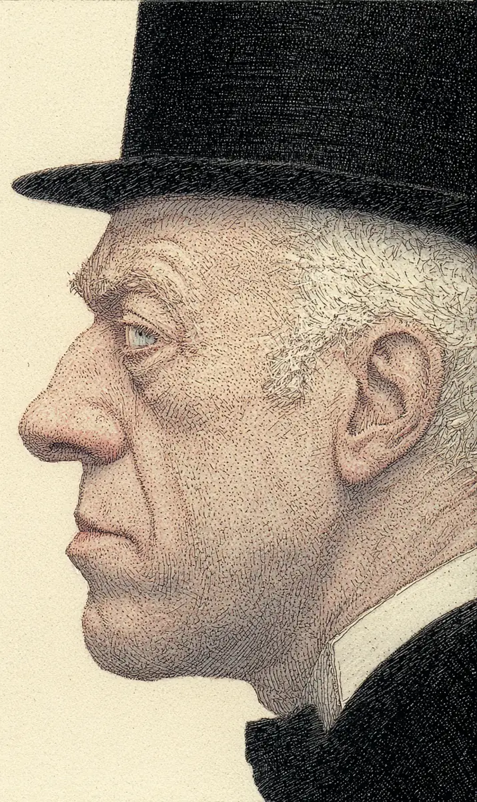

한대수는 천천히 실크해트를 머리에 얹었다.
[Han Dae-su settled the silk top hat slowly onto his head.]
손끝이 모자챙을 한 바퀴 돌았다.
[His fingertips traced the brim once around.]
육십 년을 함께한 모자였다.
[The hat had been with him for sixty years.]
오늘이 마지막이었다.
[Today would be the last.]
벽에 걸린 아내의 사진이 그를 바라보고 있었다.
[On the wall, his wife’s photograph watched him.]
“먼저 가서 미안하다고 했지요. 오늘 그 약속을 지키러 가오.”
[”I said I was sorry to send you first. Today I go to keep that promise.”]
문을 나서니 첫눈이 내리고 있었다.
[Stepping outside, the first snow was falling.]
골목 끝에서 빵집 주인이 깊이 허리를 굽혔다.
[At the alley’s end the baker bowed deeply.]
“선생님, 안녕히 가십시오.”
[”Sir, go in peace.”]
대수는 모자를 살짝 들어 답례했다.
[Dae-su lifted his hat slightly in reply.]
대로에서는 마차들이 길을 비켜 주었다.
[On the main road, the carriages parted before him.]
순사는 거수경례를 했고, 아이들은 숨을 죽였다.
[A constable saluted; the children held their breath.]
육십 년 동안 그는 같은 길을 걸어 출근했다.
[For sixty years he had walked this same road to work.]
오늘만은 출근이 아니라 퇴근이었다.
[Today alone, it was not the walk to work, but the walk home.]
대수는 똑바로 걸었다.
[Dae-su walked straight ahead.]
평생을 그렇게 걸어왔다.
[He had walked that way all his life.]
눈은 그의 어깨 위에 쌓였으나 그는 느끼지 못했다.
[The snow gathered on his shoulders, but he did not feel it.]
마당에 들어서자 낯익은 얼굴들이 반원으로 서 있었다.
[Entering the courtyard, familiar faces stood in a half-circle.]
판사, 검사, 어린 시절 친구, 그리고 며느리.
[The judge, the prosecutor, a childhood friend, and his daughter-in-law.]
대수는 한 사람씩 눈을 마주쳤다.
[Dae-su met each one’s eyes in turn.]
누구도 시선을 피하지 않았다.
[None of them looked away.]
며느리는 흐느꼈으나 곧 입을 다물었다.
[She wept, then silenced herself.]
대수가 가볍게 고개를 저었기 때문이다.
[Because Dae-su had gently shaken his head.]
울 일이 아니라는 뜻이었다.
[Meaning there was nothing to weep about.]
집행관이 다가와 의자를 가리켰다.
[The executioner approached and gestured to the chair.]
대수는 모자를 벗어 그의 두 손에 얹어 주었다.
[Dae-su lifted off the hat and laid it into the man’s two hands.]
“잘 보관해 주시오. 손자에게 물려줄 것이오.”
[”Keep it well. It shall pass to my grandson.”]
집행관의 손이 떨렸다.
[The executioner’s hands trembled.]
대수는 자리에 앉아 눈을 감았다.
[Dae-su took his seat and closed his eyes.]
마당 어디선가 누군가 작은 소리로 흐느꼈다. 며느리는 아니었다.
[Somewhere in the courtyard, someone wept quietly. It was not his daughter-in-law.]
육십 년 전, 친구를 죽이던 그날도 첫눈이 내리고 있었다.
[Sixty years ago, the day he killed his friend, the first snow had also been falling.]
밧줄이 팽팽해졌다.
[The rope drew tight.]